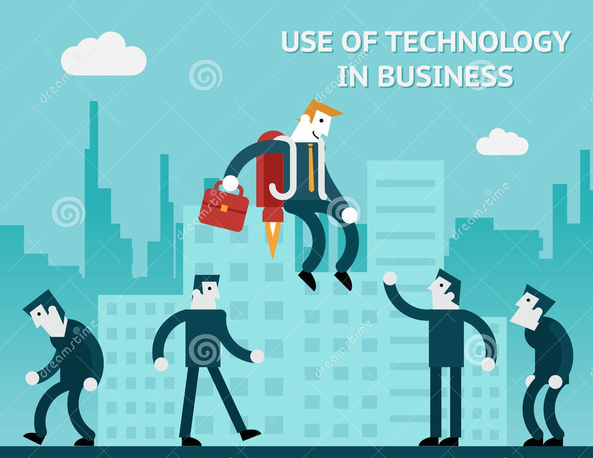

|
WHY IS TECHNOLOGY IMPORTANT IN BUSINESS?
Technology has important effects on business operations. No matter the size of your enterprise, technology has both tangible and intangible benefits that
will help you make money and produce the results your customers demand. Technological infrastructure affects the culture, efficiency and relationships of
a business. It also affects the security of confidential information and trade advantages. |
|
COMMUNICATION WITH CUSTOMERS:
First and foremost, technology affects a firm’s ability to communicate with customers. In today’s busy business environment, it is necessary for employees
to interact with clients quickly and clearly. Websites allow customers to find answers to their questions after hours. Fast shipment options allow
businesses to move products over a large geographic area. When customers use technology to interact with a business, the business benefits because better
communication creates a stronger public image.
EFFICIENCY OF OPERATIONS:
Technology also helps a business understand its cash flow needs and preserve precious resources such as time and physical space. Warehouse inventory
technologies let business owners understand how best to manage the storage costs of holding a product. With proper technology in place, executives can
save time and money by holding meetings over the Internet instead of at corporate headquarters.
BUSINESS CULTURE AND CLASS RELATIONS:
Technology creates a team dynamic within a business because employees at different locations have better interactions. If factory managers can
communicate with shipment coordinators at a different location, tensions and distrust are less likely to evolve. Cliques and social tensions can
become a nightmare for a business; technology often helps workers put their different backgrounds aside.
SECURITY:
Most businesses of the modern era are subject to security threats and vandalism. Technology can be used to protect financial data, confidential
executive decisions and other proprietary information that leads to competitive advantages. Simply put, technology helps businesses keep their
ideas away from their competition. By having computers with passwords, a business can ensure none of its forthcoming projects will be copied by the
competition.
RESEARCH CAPACITY:
A business that has the technological capacity to research new opportunities will stay a step ahead of its competition. For a business to survive,
it must grow and acquire new opportunities. The Internet allows a business to virtually travel into new markets without the cost of an executive jet
or the risks of creating a factory abroad.
|

|